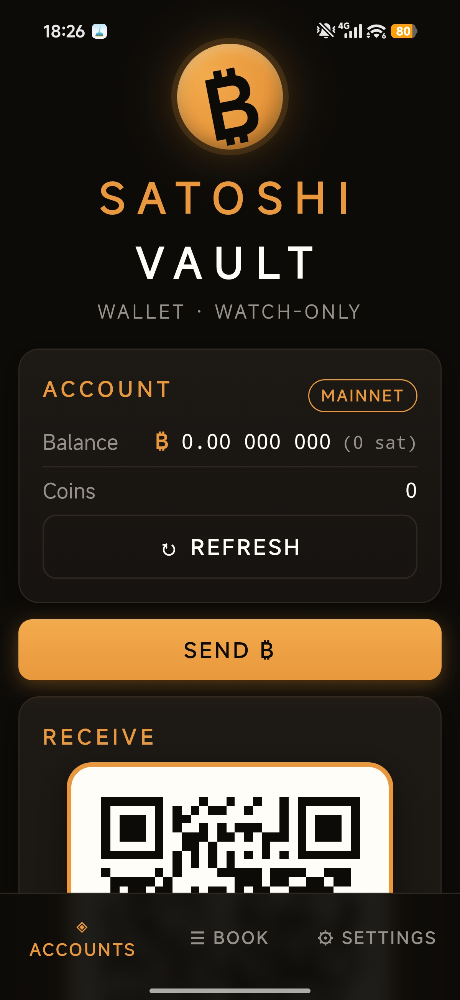
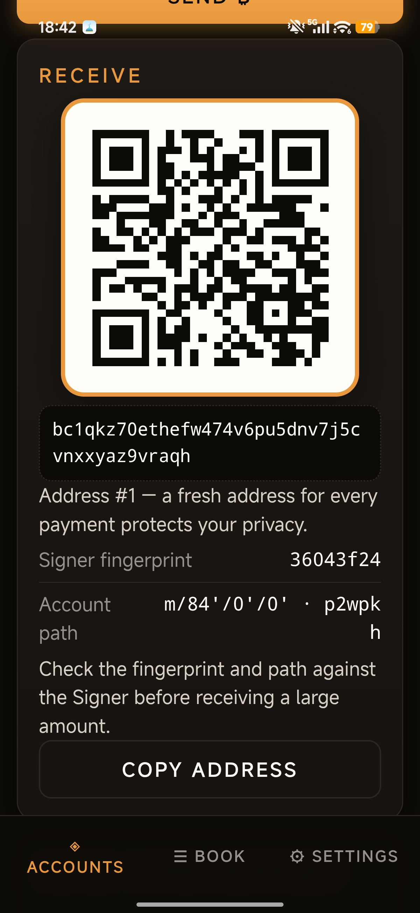

A security-first, Bitcoin-only, air-gapped wallet system.
Cold Signer + watch-only Wallet · QR-only signing channel · No telemetry, no cloud, no KYC — ever.
Android · install both, ideally on two devices — the Signer on one that never goes online again. Verify against SHA256SUMS.txt, or build them yourself from the source.
Mission
Almost every wallet theft traces back to two root causes: a seed born from weak or predictable randomness, and private keys living on an internet-connected device. Satoshi Vault attacks both.
The seed is created in an entropy ceremony that mixes many independent physical sources — camera noise, microphone noise, pointer motion, device motion — always combined with the operating system's CSPRNG, each source health-tested to NIST SP 800-90B. A dead or hostile sensor can add nothing, but it can never subtract: the result is never weaker than the OS randomness alone.
The keys then live only on a device that is physically incapable of network I/O. Everyone deserves a wallet whose seed no attacker can predict and whose keys no attacker can reach — and the only way to believe that is to be able to read it. So every line is open source, written from scratch, with no code copied from any other wallet project.
Seed generation, encrypted vault, PSBT review on its own trusted screen, signing. No network permission, CSP connect-src 'none'.
Watch-only from your xpub. Balances, coin control, fee estimates, RBF, broadcast. Assumed compromisable, and treated that way.
Screenshots


There are no Signer screenshots — there can't be. The Signer sets FLAG_SECURE,
so Android itself blocks screenshots, screen recorders and even the thumbnail in the
recents list. Your seed words cannot leak into a screenshot gallery.
How to
Install the Signer on a device that will never touch a network again — an old phone is perfect. Turn on airplane mode, remove the SIM, forget the Wi-Fi. Install the Wallet on your normal phone.
Create New Vault → Begin Entropy Ceremony: point the camera around, let the mic listen, move your finger across the screen until Entropy Collected reaches the target. Generate Seed gives you your words — write them on paper, never a photo, never a file. A short quiz after I Wrote Them Down proves you copied them correctly, and a strong password seals the vault.
On the Signer: Export Watch-Only Account → an animated QR appears. In the Wallet: Add Account → scan it. That QR carries only the xpub — public keys. The Wallet can now see every address and balance you own, and still cannot spend a single satoshi.
Wallet → Receive gives you a fresh address and QR for each payment. Before a large amount, check the master fingerprint and derivation path shown there against the ones on the Signer.
The Wallet builds an unsigned transaction and shows it as a QR. The Signer scans it and displays the real recipient, amount and fee on its own trusted screen — approve there, and it hands back a signed QR. The Wallet checks it byte-for-byte against what you reviewed, then broadcasts. Your seed never crosses the gap.
Prefer to try it first? Switch the network to signet or testnet in the Wallet's settings and run the whole loop with worthless coins.
How it defends you
Camera, microphone, pointer and motion noise absorbed into a SHA-256 sponge with 32 bytes of OS CSPRNG. Per-source health tests reject stuck counters and dead sensors outright.
Every input carries the full previous transaction, re-hashed locally against its txid. A lying server or a tampered QR cannot misstate what you are spending.
The Signer never trusts a "this is change" claim — it re-derives the path from its own master key and byte-compares the script. Fake change is shown as an attack.
An abnormal fee — by absolute size, by sat/vB, or as a share of the coins being spent — is flagged in red and cannot be signed on the first press.
Argon2id (64 MiB, t=3) → AES-256-GCM with the header authenticated as AAD. The optional BIP39 passphrase is never stored, in any form.
Every primitive comes from audited libraries (@noble/curves, @noble/hashes, @scure/base). This codebase only composes them — and documents each composition.
BIP39 mnemonics (12–24 words, optional passphrase) · BIP32/43/44/49/84/86 derivation · P2PKH, P2SH-P2WPKH, P2WPKH and Taproot P2TR · PSBT (BIP174/BIP371) as the interchange format · coin control, RBF by default, live fee estimates · Esplora backends including your own node · mainnet, testnet, signet, regtest. Verified against the official BIP test vectors in CI.
Donate ₿
No telemetry, no accounts, no paid tiers, no upsells. If Satoshi Vault helps keep your bitcoin safe and you want to support development, donations are gratefully accepted:
Bitcoin mainnet, native SegWit. The same address is pinned to the bottom of every screen of both apps, with a copy button.